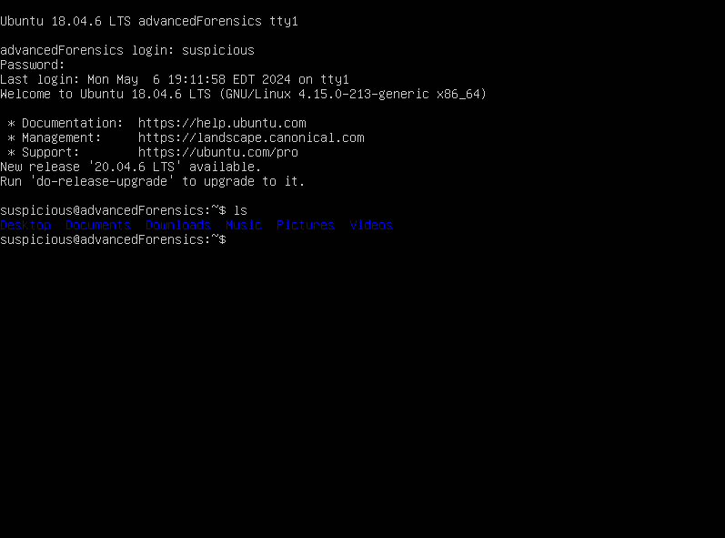

.-'` `}
_./) / }
.'o \ | }
'.___.'`.\ {`
/`\_/ , `. }
\=' .-' _`\ {
`'`;/ `, }
_\ ; }
/__`;-...'--'
Welcome to CS565 CTF! This is a "CTF" made up of 5 introductory forensics challenges on one disk image. The idea is to allow students interested in forensics to explore image analysis in a trivial setting, so there will be little chance getting stuck on something "guessy." Instead, the emphasis is more on learning the tool.
For those interested, Autopsy can be downloaded here. There is also a command line version called The Sleuth Kit, if you prefer.
Challenges
Play (WIP)